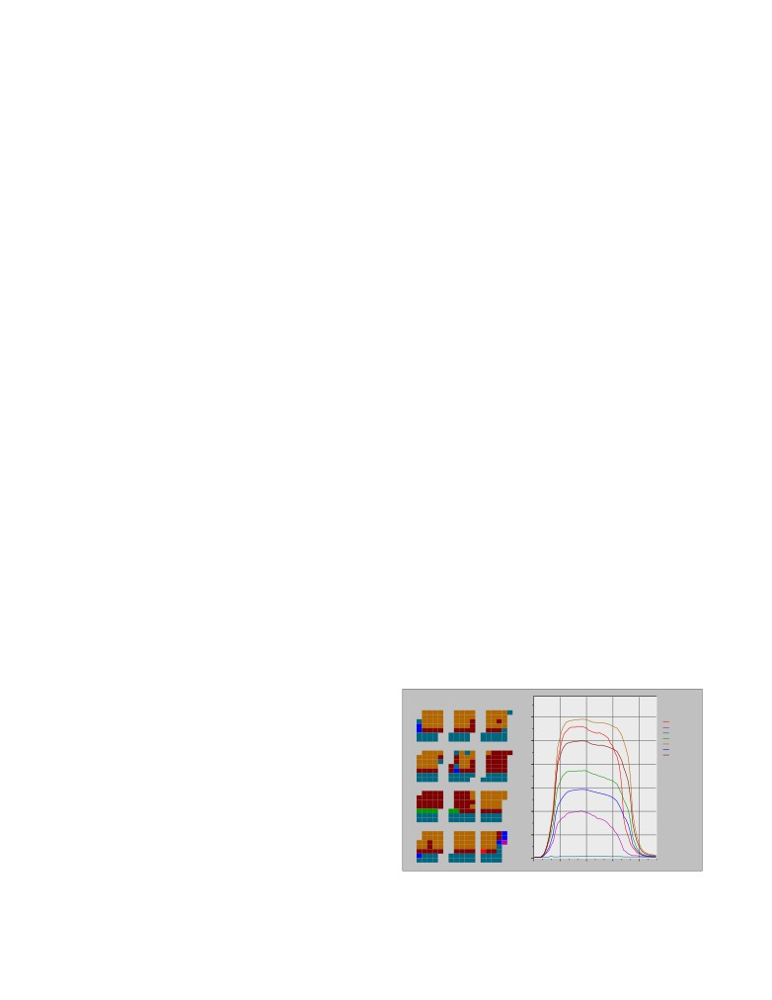
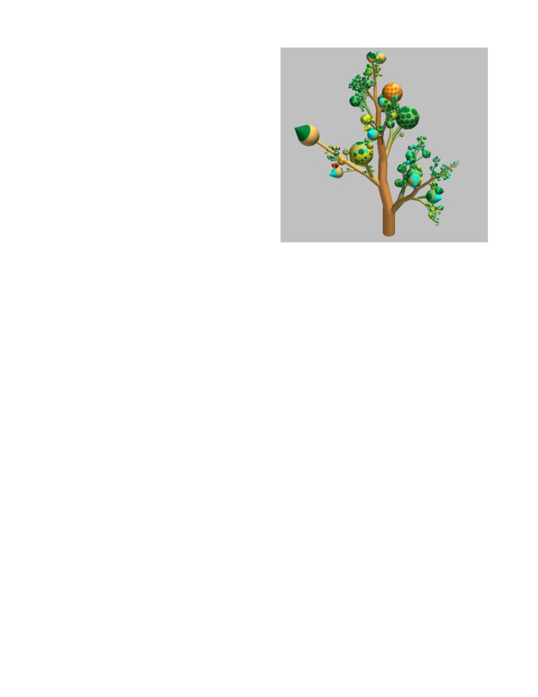
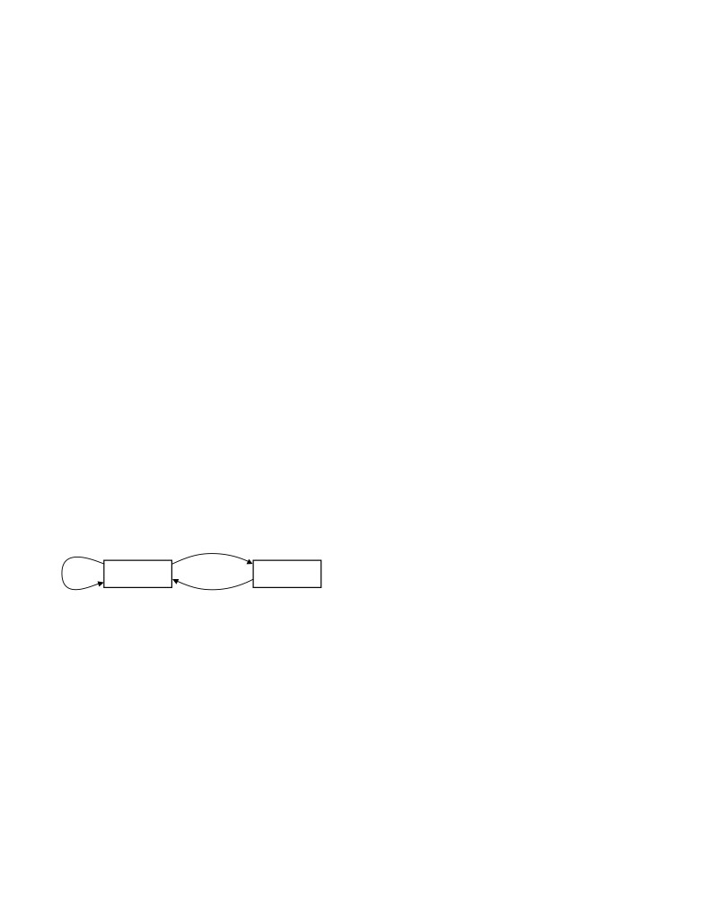

The Value of Visualization
Jarke J. van Wijk∗
Dept. Mathematics and Computer Science
Technische Universiteit Eindhoven
ABSTRACT
In this paper I want to give a contribution to the discussion on the
status and possible directions of our field. Rather than to pinpoint
The field of Visualization is getting mature. Many problems have
specific topics and activities, my aim is to detect overall patterns,
been solved, and new directions are sought for. In order to make
and to find a way to understand and qualify visualization in general.
good choices, an understanding of the purpose and meaning of vi-
This is an ambitious and vague plan, although the basic ground for
sualization is needed. Especially, it would be nice if we could as-
this is highly practical.
sess what a good visualization is. In this paper an attempt is made
I have to make decisions on visualization in many roles. As a
to determine the value of visualization. A technological viewpoint
researcher, decisions have to be made ranging from which area to
is adopted, where the value of visualization is measured based on
spend time on to which particular solution to implement; as a su-
effectiveness and efficiency. An economic model of visualization
pervisor, guidance to students must be provided; as a reviewer, new
is presented, and benefits and costs are established. Next, conse-
results and proposals for new research must be judged, and opinions
quences for and limitations of visualization are discussed (including
are expected if they are worth publishing or funding; as advisor in
the use of alternative methods, high initial costs, subjectiveness, and
a start-up company, novel and profitable directions must be spot-
the role of interaction), as well as examples of the use of the model
ted. All these cases imply judgement of the value of visualization
for the judgement of existing classes of methods and understanding
in varying senses.
why they are or are not used in practice. Furthermore, two alter-
How to assess the value of visualization? Visualization itself is
native views on visualization are presented and discussed: viewing
an ambiguous term. It can refer to the research discipline, to a tech-
visualization as an art or as a scientific discipline. Implications and
nology, to a specific technique, or to the visual result. If visualiza-
future directions are identified.
tion is considered as a technology, i.e., as a collection of methods,
techniques, and tools developed and applied to satisfy a need, then
CR Categories: H.5.2 [Information Interfaces and Presenta-
standard measures apply: Visualization has to be effective and effi-
tion]: User Interfaces; I.3.6 [Computer Graphics]: Methodology
cient. In other words, visualization should do what it is supposed
and Techniques I.3.8 [Computer Graphics]: Applications
to do, and has to do this using a minimal amount of resources. One
Keywords: Visualization, evaluation
immediate and obvious implication is that we cannot judge visu-
alization on its own, but have to take into account the context in
which it is used .
1
INTRODUCTION
In section 2 a short overview is given of the background of the
topic discussed here. In section 3 an economic model of visualiza-
Modern society is confronted with a data explosion. Acquisition
tion is proposed. The basic elements are identified first, the asso-
devices like MRI-scanners, large scale simulations on supercom-
ciated costs and gains are added next. Various implications of the
puters, but also stock trading at stock exchanges produce very large
model are discussed in section 4. In section 5 this model is applied
amounts of data. Visualization of data makes it possible for re-
to several cases. In section 6 the model is discussed and alternative
searchers, analysts, engineers, and the lay audience to obtain insight
views are considered, followed by conclusions in section 7.
in these data in an efficient and effective way, thanks to the unique
Finally, this topic is on one hand very general, high-level, and
capabilities of the human visual system, which enables us to detect
abstract; on the other hand, it is also very personal, in the sense
interesting features and patterns in short time.
that it is about values (which are subjective), and valuation of ones
Many of us will have written paragraphs like the preceding one,
own work. To reflect this, I use the first person in this paper, to
where I attempted to give the standard rationale of our field. In
emphasize that the opinions given are personal. Most examples I
1987, when the influential ViSC report [16] of the NSF appeared,
use come from my own work, often done together with coworkers.
the expectations were high. Visualization was considered as vital
The main reason for this is simply that I am most familiar with it,
and highly promising for the scientific process. Nowadays, much
not only with the techniques and results, but also with the context
progress has been made. The advances in graphics hardware are
in which it took place.
astonishing, most laptop computers are graphics superworkstations
according to the standards of just a decade ago. Many new methods,
techniques, and systems have been developed. Some of them, such
2
BACKGROUND
as slices, height-surfaces, and iso-surfaces are now routinely used
in practice.
If we use 1987 as the year where visualization started, our discipline
On the other hand, many of these new methods are not used in
celebrates this year its 18th anniversary. In the Netherlands, at this
real-world situations, many research results are nowadays consid-
age a person is considered mature. Many things have changed since
ered as incremental by reviewers, and our prospective users rarely
1987. Graphics hardware developments are amazing, as well as the
go to our conferences. So, are we, as researchers in visualization,
large amount of techniques that have been developed to visualize
on the right track?
data in a variety of ways.
There are signals that there is a need to reconsider visualization.
∗e-mail: vanwijk@win.tue.nl
First of all, there seems to be a growing gap between the research
community and its prospective users. Few, if no attendants at the
IEEE Visualization conference are prospective users looking for
new ways to visualize their data and solve their problems. Sec-
ondly, the community itself is getting both more specialized and
critical, judging from my experience as paper co-chair for IEEE
Visualization 2003 and 2004. In the early nineties, the field lay
fallow, and it was relatively easy to come up with new ideas. The
I
dK/dt
proceedings in the early nineties show a great diversity. Nowadays
D
V
P
K
the field is getting more specialized, submitted work consists often
of incremental results. This could signal that our field is getting ma-
ture. On the other hand, it is not always clear that these incremental
contributions have merit, and reviewers are getting more and more
dS/dt
critical. Thirdly, some big problems have been solved more or less
S
E
[14]. For volume rendering of medical data sophisticated industrial
packages that satisfy the needs of many users are available.
These trends urge a need to reconsider the field, and to think
data
visualization
user
about new directions. Several researchers have presented [7, 9, 17]
overviews of current challenges. Another great overview of the cur-
Figure 1: A simple model of visualization
rent status of visualization and suggestions for new directions is
provided by the position papers [3] contributed by the attendants of
the joint NSF-NIH Fall 2004 Workshop on Visualization Research
(in the form of a selection of a predefined method or in the form of
Challenges, organized by Terry Yoo. Many issues are mentioned
code), and the specific parameters to be used; the image I will of-
several times, including handling of complex and large data sets,
ten be an image in the usual sense, but it can also be an animation,
uncertainty, validation, integration with the processes of the user,
or auditory or haptic feedback. In other words, this broad defini-
and a better understanding of the visualization process itself. One
tion encompasses both a humble LED on an electronic device that
particularly impressive and disturbing contribution is [14], for its
visualizes whether the device is on or off, as well as a large virtual
title, the name and fame of the author, and the vivid description that
reality set-up to visualize the physical and chemical processes in the
indeed the field has changed and new directions are needed.
atmosphere. The image I is perceived by a user, with an increase in
In this paper no attempt is made to summarize or overview these
knowledge K as a result:
challenges, but the aim is to find a model or procedure to judge in
general if a method is worthwhile or not. In the following sections,
dK
a first step towards such a model is presented. Much of it is evident
= P(I, K).
and obvious. As a defense, some open doors cannot be kicked open
dt
often enough, and also, if obvious results would not come out, the
The amount of knowledge gained depends on the image, the current
model and the underlying reasoning would be doubtful. Some state-
knowledge of the user, and the particular properties of the percep-
ments made are more surprising and sometimes contrary to main
tion and cognition P of the user. Concerning the influence of K, a
stream thinking. To stimulate the debate, I have taken the liberty to
physician will be able to extract more information from a medical
present these more extreme positions also, hoping that some readers
image than a lay-person. But also, when already much knowledge is
will not be offended too much.
available, the additional knowledge shown in an image can be low.
A map showing the provinces of the Netherlands provides more
3
MODEL
new information to a person from the US than to a Dutch person.
Also, the additional value of an image of time-step 321 is probably
In this section a generic model on visualization is proposed. First,
small when time-step 320 has been studied just before. Concerning
the major ingredients are identified; secondly, costs and gains are
the influence of P, a simple but important example is that a color-
associated. The model is abstract and coarse, but it can be used to
blind person will be less effective in extracting knowledge from a
identify some aspects, patterns and trends.
colorful image than a person with full vision. But also, some people
are much better than others in spotting special patterns, structures,
3.1
Visualization and its context
and configurations.
The current knowledge K(t) follows from integration over time
Figure 1 shows the basic model. Boxes denote containers, circles
∫
denote processes that transform inputs into outputs. The aim here
t
K(t) = K0 + P(I, K,t) dt
is not to position different visualization methods, for which a tax-
0
onomy would be a more suitable approach, but rather to describe
the context in which visualization operates. No distinction is made,
where K0 is the initial knowledge.
for instance, between scientific visualization and information vi-
An important aspect is interactive exploration, here represented
sualization, at this level there is much more they share than what
by E(K). The user may decide to adapt the specification of the
separates them.
visualization, based on his current knowledge, in order to explore
In the following we describe the various steps. We use a mathe-
the data further
dS
matical notation for this, merely as a concise shorthand and to give
= E(K),
a sense of quantification than as an exact and precise description.
dt
Processes are defined as functions, but the domains and ranges of
hence the current specification S(t) follows from integration over
these are ill-defined.
time
∫
The central process in the model is visualization V :
t
S(t) = S0 + E(K) dt
0
I(t) = V (D, S,t).
where S0 is the initial specification.
Data D is transformed according to a specification S into a time
varying image I(t). All these should be considered in the broadest
3.2
Economic Model
sense. The type of data D to be visualized can vary from a single
bit to a time-varying 3D tensor field; the specification S includes
To assess if a visualization method is worthwhile, we must assess
a specification of the hardware used, the algorithms to be applied
its value. We propose to use profitability in an economic sense as

a measure for this. We simplify this by assuming that there is a
Nevertheless, we should try to measure or estimate W (ΔK), if we
homogeneous user community, consisting of n users which use a
want to assess the value of visualization, especially because it is the
certain visualization V to visualize a data set m times each, where
only term in the model for F with a positive sign. An operational
each session takes k explorative steps and time T . This is a crude
approach is to consider the use of visualization as an element in
simplification of course. In the real world, the user community will
problem solving. The user has a problem, he must decide which
often be highly varied, with different K0’s and also with different
action to take, and to make that decision he needs information. The
aims. The costs associated with using V come at four different
visualization should enable him to extract the relevant information
levels:
from the data.
Decisions are typically about actions to be taken or not. For
• Ci(S0): Initial development costs. The visualization method
instance, should a stock be bought or sold, should a patient be op-
has to be developed and implemented, possibly new hardware
erated or not, which people in an organization are candidates for
has to be acquired.
promotion, etc. Hence, I recommend my students to search for
and enumerate possible actions of users after using their prospec-
• Cu(S0): Initial costs per user. The user has to spend time on
tive tools. If such actions cannot be found or defined, the value of
selection and acquisition of V , understanding how to use it,
visualization is doubtful. Just claiming that a visualization gives
and tailoring it to his particular needs.
insight is not enough, if we want to offer additional value.
• Cs(S0): Initial costs per session. Data have to be converted,
If we know to which actions the visualization should lead to, the
and an initial specification of the visualization has to be made.
next steps are assessment whether the knowledge derived from the
visualization does indeed support the decision, and also, to assess
• Ce: Perception and exploration costs. The user has to spend
the economic value of this decision. This is not easy, but one can try
time to watch the visualization and understand it, as well as in
for instance to estimate how much time is saved, or try to quantify
modification and tuning of the specification, thereby explor-
the consequences of a wrong decision.
ing the data set.
4.2
Alternative methods
The total costs are now given by
Efficiency is relative, an aspect that is not captured explicitly in the
C =Ci +nCu +nmCs +nmkCe.
model. One could predict a high value for F for a new method,
however, if other methods are available to obtain the same knowl-
The return on these investments consists of the value W (ΔK) of the
edge against lower costs, then very likely the value for n is overesti-
acquired knowledge ΔK = K(T ) − K(0) per session, multiplied by
mated. Or, stated simply, if a better solution already exists, nobody
the total number of sessions:
will use the newer one. The model is too simple here. The effective
G = nmW(ΔK)
value of n itself is not a parameter, but a function of, among others,
the perceived benefit by potential users.
and hence for the total profit F = G −C we find
Developers of new visualization methods should be aware of al-
ternative solutions, and carefully study their advantages and limita-
F = nm(W(ΔK)−Cs−kCe)−Ci −nCu.
tions. New methods are not better by definition. Especially when
existing methods are heavily used in practice, they have proven to
This gives us a recipe to decide on the value of a visualization
have value. It is often hard to beat straightforward solutions; for
method. Positive are high values for n, m, W (ΔK), and low val-
instance, in many cases just using a line graph is the best way to
ues for Cs,Ce,Ci,Cu, and k. Or, in other words, a great visualiza-
show a time-varying signal.
tion method is used by many people, who use it routinely to ob-
A defense often heard for a lesser performance of new methods
tain highly valuable knowledge, without having to spend time and
compared to existing ones is that the users have not had enough
money on hardware, software, and effort. Indeed, quite obvious.
time to get accustomed to them. In some cases this might hold, but
an equally viable hypothesis is that an existing method is simply
4
IMPLICATIONS
better. For instance, just showing a set of objects in a list enables
linear scanning, whereas scanning a fancy 2D or 3D display where
Quantification of the elements of the model is hard. In this section
the objects are distributed over space is much harder [18].
we discuss this in more detail, as well as a number of other issues
implied by this model.
1997
employees
Cluster viewer
januari
februari
maart
(c) ECN 1998
4.1
Valuable knowledge
ma
6
13
20
27
3
10
17
24
3
10
17
24
31
Graphs
di
7
14
21
28
4
11
18
25
4
11
18
25
600
wo
1
8
15
22
29
5
12
19
26
5
12
19
26
5/12/1997
do
2
9
16
23
30
6
13
20
27
6
13
20
27
31/12/1997
Insight is the traditional aim of visualization. The term itself is
vr
3
10
17
24
31
7
14
21
28
7
14
21
28
za
4
11
18
25
1
8
15
22
1
8
15
22
29
Cluster 710
zo
5 12 19 26
2
9 16 23
2
9 16 23 30
500
Cluster 718
great, and suggests a high-level contribution to the advance of sci-
Cluster 719
april
mei
juni
Cluster 721
ma
7
14
21
28
5
12
19
26
2
9
16
23
30
ence. Users are enabled to see things they were not aware of, and
di
1
8
15
22
29
6
13
20
27
3
10
17
24
Cluster 722
wo
2
9
16
23
30
7
14
21
28
4
11
18
25
do
3
10
17
24
1
8
15
22
29
5
12
19
26
400
this insight helps them to define new questions, hypotheses, and
vr
4
11
18
25
2
9
16
23
30
6
13
20
27
za
5
12
19
26
3
10
17
24
31
7
14
21
28
models of their data. However, from an operational point of view,
zo
6 13 20 27
4 11 18 25
1
8 15 22 29
juli
augustus
september
300
the term insight does not help us much further to assess the value
ma
7
14
21
28
4
11
18
25
1
8
15
22
29
di
1
8
15
22
29
5
12
19
26
2
9
16
23
30
wo
2
9
16
23
30
6
13
20
27
3
10
17
24
of visualization. One problem is that we cannot directly observe
do
3
10
17
24
31
7
14
21
28
4
11
18
25
vr
4
11
18
25
1
8
15
22
29
5
12
19
26
200
za
5
12
19
26
2
9
16
23
30
6
13
20
27
or measure how much insight is acquired, and also, it is difficult to
zo
6 13 20 27
3 10 17 24 31
7 14 21 28
oktober
november
december
assess what the value of that insight is. In the model we use the
ma
6
13
20
27
3
10
17
24
1
8
15 22
29
100
di
7
14
21
28
4
11
18
25
2
9
16 23
30
wo
1
8
15
22
29
5
12
19
26
3
10
17 24
31
term knowledge, but this suffers from the same limitations. Also,
do
2
9
16
23
30
6
13
20
27
4
11
18 25
vr
3
10
17
24
31
7
14
21
28
5
12
19 26
za
4
11
18
25
1
8
15
22
29
6
13
20 27
hours
there is a strange paradox in the basic paradigm of visualization.
zo
5 12 19 26
2
9 16 23 30
7 14 21 28
0
6:00
9:00
12:00
15:00
18:00
We don’t know what information is contained in the data, hence we
make pictures to get insight. But if we do not know which specific
aspects or features should be visible, we cannot assess if we are
Figure 2: Visualization of daily patterns [28], an example of the
successful or not.
combined use of conventional statistical and graphical methods.
Alternative methods are not limited to visualization methods.
4.4
Visualization is subjective
For instance, when an automatic method exists to extract the rel-
In the ideal case, one would hope that extraction of knowledge from
evant information, visualization is useless. Visualization is not
data is an objective process, in the sense that the outcome does not
’good’ by definition, developers of new methods have to make clear
depend on who performs it, and that the analysis can be repeated
why the information sought cannot be extracted automatically. One
afterwards by others, with the same outcome. Statistics aims at this,
reason could be that such automated methods are not fullproof.
a typical pattern is the use of statistical tests to validate hypotheses
In this case, integration of automated methods, for instance from
on the data. Such tests make assumptions on the data (such as a
statistics or data-mining, and visualization is a great idea, see for
normal distribution) and have free parameters (like the confidence
instance the work underway and led by Jim Thomas in the Visual
level), but furthermore, they do meet the criteria for objectiveness.
Analytics arena [19].
Unfortunately, visualization often does not meet this aim. Con-
Figure 2 shows an example where we used standard methods in a
sider
new combination [28]. For the analysis of a time-series of one year,
dK
daily patterns were clustered, i.e., finding similar daily patterns was
= P(V (D, S,t), K).
dt
automated. The results are shown using two conventional repre-
sentations: average daily patterns of clusters are shown as graphs,
This simply means that the increase in knowledge using visualiza-
and the days per cluster are shown on a calendar. The approach is
tion not only depends on the data itself, but also on the specification
straightforward and conventional, and very effective.
(for instance, which hardware has been used, which algorithm has
been used and which parameters), the perceptual skills of the ob-
server, and the a priori knowledge of the observer. Hence, the state-
4.3
High initial costs
ment that visualization shows that a certain phenomenon occurs is
One important reason that new visualization techniques are not used
doubtful and subjective.
in practice is the high initial cost per user Cu(S0) involved. Let us
An even harder case is the statement that a certain phenomenon
consider a potential customer for visualization, for instance a re-
does not occur. I have often spent hours visualizing data, searching
searcher doing complex simulations. First, he has to realize that
for patterns and structure. Sometimes some result could be pro-
maybe visualization can help him to understand his data. This is
duced using a particular setting of the parameters, in other cases I
not obvious, he already uses some methods to extract information
failed to do so. When a visualization does not show clear patterns,
from his results in a condensed form. For instance in molecular dy-
it is hard to decide if this is a limitation of the visualization method,
namic simulations, one typical aim is to derive large scale quantities
or that the setting of the parameters was wrong, or that the data
(temperatures, porosity, etc.) via simulation from the properties on
simply does not contain significant patterns.
a small scale (size of ions, fields, etc.). Such large scale quantities
This does not mean that visualization is useless. If there are
can be calculated fairly easily from the raw data. Mathematicians
no better alternatives to inspect complex data, visualization has to
working in Computational Fluid Dynamics are often not interested
be used. Another line of defense is that visualization should not be
in particular flow patterns, but rather in convergence of numerical
used to verify the final truth, but rather to inspire to new hypotheses,
methods and conservation of quantities, which again can be calcu-
to be checked afterwards. Part of the subjectiveness can be elimi-
lated easily and summarized in a few numbers.
nated by simply showing the visualization to the audience, so that
The easiest way to visualize data is to use post-processing ca-
they can view and judge it themselves. However, this does not take
pabilities that are integrated with the software used. Commercial
away the subjectiveness inherent in S, as a second hand viewer we
packages for, for instance, computational fluid dynamics or finite
do not know how sensitive the ultimate visualization is to changes
element simulation offer these. From a visualization point of view,
in scales and/or selections of the data.
the techniques offered are far from state of the art: Usually just
options like iso-surfaces, color mapping, slicing, streamlines and
4.5
Negative knowledge
arrow plots are provided. But if these meet the demands of our
user, then this is a highly cost-effective way.
In the previous subsection we considered subjective aspects of vi-
Suppose that this option is not available or falls short. The next
sualization. There is another problem: Visualizations can be wrong
step is to find alternatives. Our researcher has to get acquainted with
and misleading. Or, in the terminology introduced here, negative
possible solutions. Unfortunately, there are no books that present
knowledge (|ΔK| < 0) can be produced. Tufte has introduced the
and compare novel visualization techniques (like volume rendering
lie-factor [23], which he defined as the ratio of the size of an effect
or topology based flow visualization) at an introductory level. So
shown in the graphic to the size of the effect in the data.
he has to study research papers, or search and get in contact with an
Here, I just want to give an example of my own experience with
expert in the field.
this. A long time ago I visualized the waves produced by ships for a
Next steps are also costly. Maybe he can get a research prototype
maritime research institute. The data were the result of simulations.
to work with, or else he has to (or let somebody) implement the
Figure 3 (a) shows the result of bilinear interpolation of the data. I
novel techniques. Often additional software has to be developed to
found these results unclear, hence I decided to use an interpolat-
convert his data to a suitable format.
ing spline, thereby smoothing the surface while remaining faithful
This all takes much time and effort, while it is unclear whether
to the data. Figure 3 (b) shows clearly that two sets of waves are
the new method will indeed solve his problem. Hence, a rational
generated: the standard waves as well as a set of waves orthogonal
decision is to abstain from this.
to this. I proudly presented this discovery to the researcher, who
There are of course ways to share the initial costs with others. A
immediately replied that this was physically totally impossible. A
group of researchers can take advantage of an initial investment by
much better visualization is shown in figure 3 (c), where an approx-
one of them. Also, providers of simulation software can be asked to
imating spline is used. The artifacts in the middle image are the
integrate new methods. Visualization does not seem to have a high
result of aliasing. The data orthogonal to the ship are sampled close
priority here however. For an impression of what providers think to
to the Nyquist frequency, interpolation gives rise to aliases, which
be important for their customers, we can have a look at web-sites
corresponding waves have in this 2D case a different direction than
of companies like MSC or Fluent, and observe that features like
the original wave. A smoothing interpolating spline smoothes away
advanced simulation capabilities and tight integration are promoted
the high frequencies, but the first aliases survive and give rise to
much more than visualization, which is just mentioned in passing
wrong interpretations. I learned from this that interpolation is not
by under the header of post-processing.
by definition better than approximation, and also that the judgement
5
EXAMPLES
In this section a number of (classes of) techniques are considered
and the cost model is used to explain their adoption in practice.
5.1
Texture based flow visualization
The use of texture to visualize fluid flow has been introduced in
the early nineties. The idea is that dense textures enable viewers
to judge the direction of flow at all locations of the plane, whereas
the standard arrows and streamlines only give discrete and hard to
interpret samples. The topic has been studied heavily in the visu-
alization community, a recent non-exhaustive overview [13] has 90
references. The progress made in this decade is great. The early
Spot Noise technique [24] was an interesting first attempt, in 1993
Cabral and Leedom introduced Line Integral Convolution (LIC),
which gave high quality renderings of 2D fluid flow [5]. Many
other variations and additions have been presented since then, for
instance to handle flow on surfaces and in volumes, and also to
boost the performance, using software or hardware acceleration
[13]. Nowadays, high quality 2D texture images of flow fields can
easily be generated on standard hardware at 50 or more frames per
second [25]. This seems a success story, but on the other hand,
these methods are not integrated in commercial software, users of
Figure 3: Wave surface, from top to bottom (a) bilinear interpo-
Computational Fluid Dynamics (CFD) are typically completely un-
lation,
(b) cubic interpolation, (c) cubic approximation. Incorrect
aware of their existence, let alone that they routinely use them to
interpolation leads to artifacts.
solve their problems. Here I use texture based flow visualization
because I am most familiar with it, but for other classes of meth-
ods, such as topology based flow visualization and feature based
flow visualization, similar patterns seem to apply.
of an expert, with a high K0, is vital for proper interpretation and
How can we explain this? We consider the parameters of the
validation. I never published this, and also, articles on limitations
cost model. The number of users n is not too great. CFD is vital
and pitfalls of visualization are scarce. For an advancement of the
for some areas, but there are few cases where CFD is routinely used
field, more such reports would be highly beneficial.
for screening, compared to for instance medical applications. The
frequency of use m is also not very high. Often, CFD-users spend
much time on defining the model, simulations can also take a long
time. By then, they are very familiar with their models (high K0).
4.6
Interaction
For the analysis of the results many alternative options are avail-
able, including composite quantities (such as lift of an airfoil) and
Interaction is generally considered as ’good’. One could advocate
straightforward cross-sections and arrow plots, with low costs. The
the opposite: Interaction should be avoided, and well for two rea-
use of texture based visualization incurs at least a high value for Cu
sons. First of all, as mentioned before, allowing the user to modify
(see section 4.3). The additional ΔK that texture based visualiza-
S freely will lead to subjectiveness. It is tempting to tune the map-
tion offers is unclear. Laidlaw et al. [12] have compared different
ping so that the desired result comes out strongly, but this can be
vector visualization methods. LIC turned out to yield better results
misleading. Also, high customization can make it hard to compare
for critical point detection, but worse results for other aspects, such
different visualizations. Secondly, interaction is costly, and leads
as estimation of the angle of the flow. Also, standard LIC does not
to a high Ce. Rerendering the image after a change of the mapping
give the sign of the direction of the flow. Hence, we can doubt about
or the point of view taken requires often a few seconds, viewing
the value of ΔK. And finally, it is not clear what the real value is
it again also. If many options are available to modify the visual-
of this ΔK, in the sense that better visualization leads to better deci-
ization, trying them all out can take hours. A developer of a new
sions. At least, so far there does not seem to be such a strong need
method therefore should think carefully about good defaults, or au-
for better visualization methods in the CFD community that they
tomatic ways to set the visualization parameters, so that as much
have attempted to integrate these methods into their packages.
knowledge is transferred as possible.
Obviously, in many cases interaction strongly enhances the un-
5.2
Cushion treemaps
derstanding of the data. The most important case is simply when
the amount of data to be shown does not fit on the screen, or is too
Also in the early nineties, Johnson and Shneiderman introduced the
large to be understood from a single image. In this case, navigation
concept of a treemap [8] to visualize large hierarchical data sets.
and selection of the data has to be supported. Ideally, the user has to
The base algorithm is straightforward: A rectangle is recursively
be provided with cues that will lead him quickly to images where
subdivided according to the hierarchical data, in such a way that
something interesting can be seen. Another case is during devel-
the size of each rectangle corresponds to the size of each leaf ele-
opment of new methods. I stimulate my students to make every
ment. In the late nineties we proposed to use hierarchical cushions
aspect of their new methods customizable via user interface wid-
to show the underlying hierarchical structure more clearly [26]. We
gets, so that the total solution space can be explored. However, for
packaged this technique in 2000 in SequoiaView [1], a tool for the
the final versions of their prototypes I recommend them to offer
visualization of the contents of a hard disk (figure 4), and made this
suitable presets under a few buttons, so that a good visualization
publicly available as freeware. Since then, SequoiaView has been
can be obtained with little effort.
downloaded about 400,000 times from our site. Also, it has been
In a broader sense, we can view visualization everywhere. Com-
mercial television uses visualization to show the chemical miracles
of new cosmetics, the ingenuity of vacuum-cleaners, and why a
new fitness device does not harm your back. Obviously, such visu-
alizations are probably not the result of visualizing data, but rather
the result of fantasy of advertisement agencies. Selling stuff is not
only the realm of business, but also of science itself. Once I heard
someone state: The purpose of visualization is funding, not insight.
We can explain the value of visualization for presentation with the
cost model. If we consider the viewers of such visualizations as
the users, we see that n is high; K0 is low (the viewers know little
about the topic, so much can be gained); the action to be taken is
clear (buy a product, fund research) and has direct economic conse-
quences; the costs for the viewers are low (they just have to watch
the visualization), although they can be high for the presenter. And
furthermore, for these purposes there are almost no alternative or
competing techniques. Pure facts (product X saves Y percent of
time) can be convincing, but to make plausible why, and also to
Figure 4: Visualization hard disk using SequoiaView [1, 26, 27], an
show that this is all Scientifically Sound, visualization is the way to
example of an application that has found an audience.
go.
6
DISCUSSION
distributed three times via CD with the German computer magazine
C’t. This is an example how visualization has reached an audience.
In the preceding sections a number of questions were raised and var-
The economic model helps to explain this result. First, the num-
ious disturbing statements were made. There are many objections
ber of (potential) users is very large, in principle equal to the num-
that can be made, and in this section some of them are given. One
ber of PC users. Typically, such a tool is used several times per year,
important distinction is to consider visualization either as technol-
which is not very high, but not neglectable. Alternative solutions
ogy, art, or as science. Associated with these are a number of routes
for this problem are scarce (SpaceMonger, using also treemaps is
for future work.
an example), and getting an overview of a hard disk is hard using
Windows Explorer.
Information can be derived fairly easy from the visualization. It
6.1
Technology
is easy to spot large files, large directories, and large collections of
files. Furthermore, this information is directly valuable for the user:
In the cost model, visualization is considered as a technology, to
The tool can help (and many users have confirmed this) to delay
be measured for utility. In this context, research in visualization
buying a new hard disk. The action is clear here: removal of files.
should lead to new solutions that are useful in practice. Not all the
We offer an option to start up Windows Explorer from SequoiaView
work done is successful in this respect, but we can find a number of
to remove files manually. The initial costs per user are low: The tool
reasons to explain this.
itself is freeware, it only has to be downloaded and installed. The
First of all, innovation is a merciless process, where only few
costs per use case are minimal as well. By default, the tool starts
new solutions survive. A rule of thumb in product development is
to collect data from the last folder specified, and an image is shown
that thousand ideas lead to hundred prototypes, which lead to ten
automatically. Exploration is easy: Extra information per file can
products, out of which just one is successful. The visualization
be obtained by hovering the pointer over the rectangles.
research community operates in the start of this pipeline, hence it
In summary, F is high in this case. We would like to think that
should come as no surprise that not everything finds its way. We
this is a result of our visualization method, however, the main rea-
can see it as a mission to develop inspiring new ideas, which are a
sons are probably that our tool meets a real need of real users, and
primary fuel in the innovation process.
that the costs, in all respects, are minimal.
Creativity however consists of two parts: creation of new ideas as
well as selection of the best ones. The first task is fulfilled properly
by the visualization community, the second is not. The number of
5.3
Presentation vs. exploration
careful validations of visualization methods is still low, although
Next we consider a more general case. The main use cases for vi-
this seems to be improving in the last years.
sualization are exploration (where users do not know what is in the
Secondly, innovation is a long chain. Developing new methods
data), and presentation (where some result has to be communicated
is quite different from turning these into products and marketing
to others). It is hard to quantify this, but my impression is that
them. There is a gap between our prospective users and the research
many researchers in visualization consider exploration as the major
community. Both do not have the proper stimuli to bridge this gap:
raison d’être for visualization, whereas presentation is considered
individual researchers are too busy increasing the number of pub-
as something additional and not too serious. However, from my
lications they are judged on, and for the end-users implementing
own experience, presentation is at least just as important as explo-
new methods is far too costly. The gap can be filled in different
ration. Many users find videos and images attractive for presenting
ways. One way is via commercial companies (spin-off companies,
their work at conferences; the popularity of visualization tools and
or companies that integrate visualization in their simulation pack-
demos often rises sharply just before open days. For years I had
ages), an alternative is via open source and academic development
a pleasant and fruitful cooperation with Flomerics Ltd. in the UK.
and maintenance, funded by government agencies. VMD [2] is an
This company develops CFD-based tools for, amongst others, ther-
example of the latter category. As a corollary, if we think that visu-
mal assessment for the electronics industry. My major contact there
alization is useful and that this gap causes the lack of adoption, we
was the marketing manager, who could use visualization to show
should aim at increasing funding for more practical activities. Or
the benefits of the CFD tools to managers.
we should start up companies.

Thirdly, one could state that all this is a matter of time. It takes
time before new ideas penetrate, before new users become aware of
new methods, before initiatives are taken to integrate new methods
into existing systems. This might be true in some cases, however,
it is also too easy to use this as an excuse. It could be used for any
method, hence it does not help us to distinguish between good and
bad ones.
Fourthly, the focus in the model is on large numbers of users and
use cases. One can also consider cases where the number of users is
small, but where the value of the result is very large. In the books of
Tufte some great cases are presented, such as Snow’s discovery of
the cause of a cholera epidemic in 1854 [21]. Are there recent cases
for new visualization methods? Cases that enabled the researcher
to obtain a major scientific insight, to save many lives, or to solve
a crucial technological problem? One would like to read more case
studies in this spirit, which show that visualization is worthwhile
and can make a difference.
Finally, one defense is that maybe we are not doing too bad,
compared to other disciplines. Many disciplines (for instance, in
mathematics) do not care about practical usability at all, for some
computer science fields that do claim to have practical relevance it
is also hard to see the adoption in practice. Why should we bother?
This notion is explored further in the next subsection.
Figure 5: Botanic visualization contents of a hard disk [10, 27].
6.2
Art
Useful or just a nice picture?
One could claim that visualization has value in its own right, and
for its own purposes. One part of this is in the results: Some of the
from different perspectives. In terms of the model proposed, vi-
images we produce have a clear aesthetic value. But the art of vi-
sualization can be observed from the point of view of the data D
sualization can also be found in the ideas, methods, and techniques
to be visualized, the various solutions proposed (S and V ), from
developed. We can consider ourselves as a group of puzzle solvers,
the ΔK aimed at, i.e., the purpose or discipline for which it is ap-
and the challenge is to develop new, simple, and elegant solutions,
plied, the images I themselves, or from aspects such as perception
which provide us all with intellectual and aesthetic satisfaction.
P or exploration E. Also, developing good visualization solutions
This is not a line of defense that can help us to convince our
is intrinsically a design problem, and closed form solutions for the
prospective users and sponsors. Nevertheless, I do want to mention
optimalization problem ”Given D find V such that ΔK is optimal”
it, because it can give a powerful thrust (and obviously also because
cannot be expected.
results of this possibly will find applications in the real world). In
Nevertheless, we could and should aim at more generic insights,
the early nineties, I worked hard on using texture for visualization -
at several levels. First of all, a descriptive approach can be pur-
not to satisfy users, but simply because the puzzle was tough, chal-
sued further. Methods are analyzed and categorized, leading to tax-
lenging, and hard to crack. The work of our student Ernst Kleiberg
onomies that show how they relate to and differ from each other.
on botanically inspired tree visualization (figure 5, [10]) was not
Such taxonomies span up the current solution space, and can lead
driven by user requests, but just an experiment to find out if it could
to insight where new opportunities are. Some examples of good
be done at all. At the Information Visualization Symposium in 2004
overview papers are [30, 6, 13], a great example of a taxonomy is
we got two messages back. Alfred Kobsa found the usability lim-
given in [4], where a variety of different marching cube style algo-
ited, compared to other methods [11]; on the other hand, Stuart
rithms are brought under one umbrella using computational group
Card showed this image in his keynote speech as an example of a
theory. Even if it were only because the field is still developing
nice visualization. Is this a good visualization or not?
and overviews are quickly outdated, more work in this area should
Finally, in my own work, I found aesthetic criteria on new meth-
be encouraged. Taxonomies need not be confined to methods, also
ods to be guiding and effective. Sometimes, each link of the chain
taxonomies on different kinds of data and especially on different
from idea, mathematical model, algorithm, implementation to vi-
types of knowledge that are relevant for end users are useful.
sual result is clean, simple, elegant, symmetric, etc. It is amazing
how much effort is required to reach this. Developing great ideas is
Secondly, evaluation and validation are important. Assessment
simple, rejection of bad ideas takes all the time.
of the effectiveness and efficiency of different methods and tech-
niques is vital from a technological point of view (which method to
use), but also as a base for more generic statements on visualiza-
6.3
Science
tion. A science of visualization should be empirical, in the sense
Apart from considering visualization as a technology, or as an art
that concrete measurements of the phenomena studied are done,
for its own sake, we could consider visualization research as a sci-
which in our case concern people making and watching images that
entific discipline. If there is something like a Science of Visual-
depict data. Tory and M öller [20] give a good overview of the cur-
ization, what should it bother about? Loosely defined, a scientific
rent status of the use of human factors research in visualization, and
discipline should aim at a coherent set of theories, laws, and mod-
identify areas for future research.
els that describe a range of phenomena, have predictive power, are
Thirdly, in line with the previous, we should ultimately aim at
grounded in observations, and that can be falsified.
generic results (models, laws) that enable us to understand what
If we look at the field now, many algorithms and techniques have
goes on and to predict why certain approaches do or don’t work.
been developed, but there are few generic concepts and theories.
In the end, explanations should be based on properties of the en-
One reason for the lack of fundamental theories is that visualization
vironment of visualization, especially the end user. The value of
is intrinsically complex, has many aspects, and can be approached
visualization is ultimately determined by his perceptual abilities,

his knowledge on the data shown, the value he assigns to various
[7]
B. Hibbard. Top ten visualization problems. SIGGRAPH Computer
insights, and the costs he is willing to spend.
Graphics Newsletter, 33(2), 1999.
Ware’s book on Information Visualization [29] is a rich source
[8]
B. Johnson and B. Shneiderman. Treemaps: a space-filling approach
of insights on perception and how these can be used to improve
to the visualization of hierarchical information structures. In Proceed-
ings of IEEE Visualization ’91, pages 284-291. IEEE Computer Soci-
visualization, Tufte gives many useful guidelines and recommen-
ety Press, 1991.
dations in his books [23, 21, 22]. However, many of these are not
[9]
C. Johnson. Top scientific visualization research problems. IEEE
quantitative, and also, do not explain how to handle conflicting re-
Computer Graphics and Applications, 24(4):13-17, 2004.
quirements. One operational and practical criterium on guidelines
[10]
E. Kleiberg, H. van de Wetering, and J.J. van Wijk. Botanical visual-
is that they should allow for automated implementation, such that
ization of huge hierarchies. In Proceedings IEEE Symposium on In-
the user gets a good, if not optimal view on the data without costs.
formation Visualization (InfoVis’2001), pages 87-94. IEEE Computer
The early work of Mackinlay [15] on automated generation of vi-
Society Press, 2001.
sualizations is great, and it is surprising that the state of the art in
[11]
A. Kobsa. User experiments with tree visualization systems. In Pro-
this area does not seem to have advanced much further since then.
ceedings 2004 IEEE Symposium on Information Visualization (InfoVis
Finally, methodological issues have to be studied further. This
2004), pages 9-16, 2004.
concerns questions like how to design visualizations and how to
[12]
D.H. Laidlaw, R.M. Kirby, J.S. Davidson, T.S. Miller, M. da Silva,
measure and evaluate the effectiveness of various solutions. And
W.H. Warren, and M.J. Tarr. Quantitative comparative evaluation of 2d
also, how to assess the value of visualization in general.
vector field visualization methods. In Proceedings IEEE Visualization
2001, pages 143-150. IEEE Computer Society Press, 2001.
[13]
R.S. Laramee, H. Hauser, H. Doleisch, B. Vrolijk, F.H. Post, and
7
CONCLUSION
Daniel Weiskopf. The state of the art in flow visualization: Dense
and texture-based techniques. Computer Graphics Forum, 23(2):203-
In the preceding sections, I have tried to answer the question how
221, 2004.
the value of visualization can be assessed. As a conclusion, I think
[14]
B. Lorensen. On the death of visualization, 2004. In [3].
there is not a single answer, but that it depends on the point of view
[15]
J.D. Mackinlay. Automating the design of graphical presentations of
one adopts. One view is to consider visualization purely from a
relational information. ACM Transactions on Graphics, 5(2):110-141,
technological point of view, aiming for effectiveness and efficiency.
1986.
This requires that costs and benefits are assessed. The simple model
[16]
Bruce H. McCormick, Thomas A. DeFanti, and Maxine D. Brown
(eds.). Visualization in Scientific Computing. ACM SIGGRAPH, New
proposed enables us to get insight in various aspects of visualiza-
York, 1987.
tion, and also to understand why certain classes of methods have
[17]
T.-M. Rhyne, B. Hibbard, C. Johnson, C. Chen, and S. Eick. Can we
success and others not. Another view is to consider visualization
determine the top unresolved problems of visualization? In Proceed-
as an art, i.e., something that is interesting enough for its own sake,
ings IEEE Visualization 2004, pages 563-565, 2004.
and finally a view on visualization as an empiric science was dis-
[18]
B. Shneiderman, 2004. Comment during session at InfoVis 2004.
cussed.
[19]
J.J. Thomas and K.A. Cook (eds.). Illuminating the Path: Research
Obviously, these three different views, schematically depicted
and Development Agenda for Visual Analytics. IEEE, 2005.
in fig. 6, are strongly related, and results from one view can stim-
[20]
M. Tory and T. M öller. Human factors in visualization research. IEEE
ulate work according to the other views. Finally, each view that
Transactions on Visualization and Computer Graphics, 10(1):72-84,
is adopted does imply playing a different game, and if we want to
2004.
win, we should play those games according their own rules: aim for
[21]
E.R. Tufte. Envisioning Information. Graphics Press, 1990.
provable effectiveness and efficiency, aim for elegance and beauty,
[22]
E.R. Tufte. Visual Explanations: Images and Quantities, Evidence
and aim at generic laws with predictive power.
and Narrative. Graphics Press, 1997.
[23]
E.R. Tufte. The Visual Display of Quantitative Information (2nd edi-
tion). Graphics Press, 2001.
technology
[24]
J.J. van Wijk. Spot noise: Texture synthesis for data visualization.
Computer Graphics, 25:309-318, 1991. Proceedings SIGGRAPH’91.
art
[25]
J.J. van Wijk. Image based flow visualization. ACM Transactions on
Visualization
Real world
Graphics, 21(3):745-754, 2002. Proceedings of ACM SIGGRAPH
2002.
science
[26]
J.J. van Wijk and H. van de Wetering. Cushion treemaps. In Proceed-
ings 1999 IEEE Symposium on Information Visualization (InfoVis’99),
Figure 6: Views on visualization
pages 73-78. IEEE Computer Society Press, 1999.
[27]
J.J. van Wijk, F. van Ham, and H.M.M. van de Wetering. Rendering
hierarchical data. Comm. ACM, 46(9ve):257-263, September 2003.
[28]
J.J. van Wijk and E. van Selow. Cluster and calendar-based visual-
ization of time series data. In Proceedings 1999 IEEE Symposium
REFERENCES
on Information Visualization (InfoVis’99), pages 4-9. IEEE Computer
Society Press, 1999.
[29]
C. Ware. Information Visualization: Perception for Design. (2nd Edi-
tion). Morgan Kaufman, 2004.
[3] Position papers NIH/NSF fall 2004 workshop on visualization re-
[30]
P.C. Wong and R.D. Bergeron. 30 years of multidimensional multi-
search challenges, 2004. visual.nlm.nih.gov/evc/meetings/vrc2004.
variate visualization. In G.M. Nielson, H.H. Hagen, and H. Mueller,
[4] D.C. Banks and S. Linton. Counting cases in marching cubes: Toward
editors, Scientific Visualization
- Overviews, Methodologies, and
a generic algorithm for producing substitopes. In Proceedings IEEE
Techniques. IEEE Computer Society Press, 1997.
Visualization 2003, pages 51-58, 2003. (Best Paper award).
[5] B. Cabral and L. C. Leedom. Imaging vector fields using line integral
convolution. Computer Graphics, 27:263-270, 1993. Proceedings
SIGGRAPH’93.
[6] I. Herman, G. Melanon, and M.S. Marshall. Graph visualisation in in-
formation visualisation: a survey. IEEE Transactions on Visualization
and Computer Graphics, 6(1):24-44, 2000.